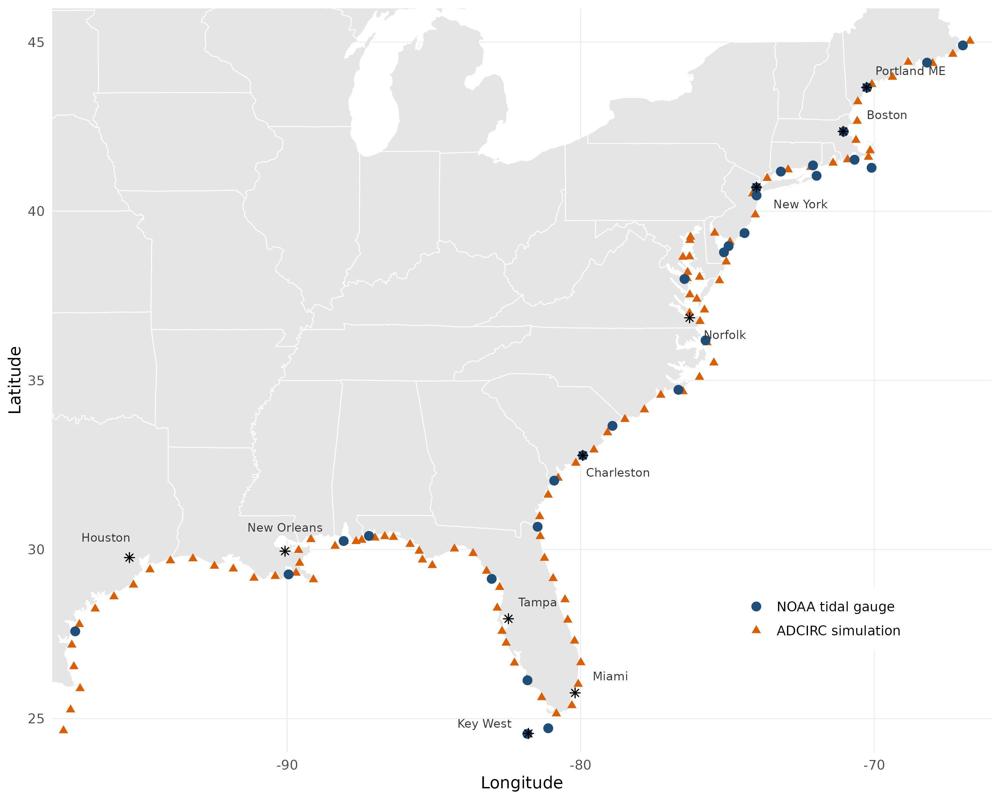
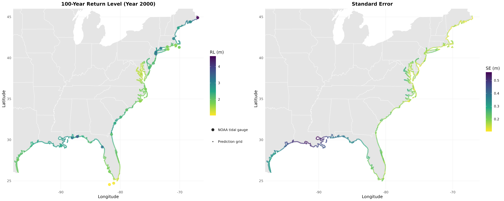

Fusing sparse observations and dense simulations for spatial extreme value analysis. Implements the two-stage frequentist framework from:
White, B. N., Blanton, B., Luettich, R., & Smith, R. L. Fusing Sparse Observations and Dense Simulations for Spatial Extreme Value Analysis: Application to U.S. Coastal Sea Levels. arXiv preprint, 2026. arXiv:2603.03247
The package was developed for fusing NOAA tidal gauge observations with ADCIRC hydrodynamic simulations of coastal sea levels, but the framework is general: any application with annual maxima from multiple spatial data sources (observed, modeled, satellite, reanalysis, etc.) can use evfuse by specifying the source-to-parameter mapping via source_params.
Key Results
Applied to 129 sites along the U.S. Gulf and Atlantic coasts (29 NOAA tide gauges + 100 ADCIRC simulation points):


| Validation | 100-yr RL RMSE (m) | Reduction | Sites won | |
|---|---|---|---|---|
| Gauge-only | Joint | |||
| Spatial LOO-CV (29 sites) | 0.724 | 0.467 | 35.5% | 28/29 |
| Geographic block CV (5 folds) | 0.810 | 0.665 | 17.9% | 24/29 |
The estimated cross-source correlations are high: 0.995 for location (μ₀), 0.443 for log-scale (log σ), and 0.837 for shape (ξ). These correlations quantify the agreement between NOAA observations and ADCIRC simulations and are the mechanism by which data fusion improves estimation. Mean standard errors drop by 10%, with the largest gains at isolated stations far from other gauges.
Installation
# install.packages("devtools")
devtools::install_github("BrianNathanWhite/evfuse")Requires R >= 3.5. Dependencies (extRemes, Matrix) are installed automatically.
Quick Start
library(evfuse)
# Bundled dataset: 29 NOAA + 100 ADCIRC sites along U.S. Gulf/Atlantic coasts
data(coast_data)
D <- compute_distances(coast_data$sites)
# Stage 1: Fit GEV at each site
stage1 <- fit_gev_all(coast_data)
# Bootstrap measurement uncertainty
bs <- bootstrap_W(coast_data, B = 500, seed = 42)
W_tap <- taper_W(bs$W_bs, D, lambda = 300)
# Stage 2: Fit 6-dim joint GP model
model <- fit_spatial_model(stage1, coast_data, W_tap, D)
# Predict at new locations (data frame with lon, lat columns)
new_sites <- data.frame(lon = c(-90.0, -81.5), lat = c(30.0, 31.5))
preds <- predict_krig(model, new_sites)
rl <- compute_return_levels(preds, r = 100)
# 100-year return levels at year-2000 reference conditions
rl$return_level
rl$se_sim # Monte Carlo simulation SEs (recommended)
rl$se_delta # delta method SEs (closed-form check)
# Optional: compare against a single-source baseline via LOO-CV
# (closed-form, no refitting required)
loo <- loo_cv(model)
sum_loo <- loo_summary(loo, r = 100) # r = return period in years
sum_loo$total_lpd # log predictive density (higher = better)
sum_loo$rl_rmse # 100-year return level RMSEFor a more detailed walkthrough including model diagnostics, custom data sources, and the source_params abstraction, see the tutorial vignette. You can also view it in R after installing with vignettes:
devtools::install_github("BrianNathanWhite/evfuse", build_vignettes = TRUE)
vignette("evfuse-tutorial")Pipeline Overview
Stage 1: Fit GEV(μ, log σ, ξ) independently at each site via maximum likelihood (
fit_gev_all()).Bootstrap: Estimate measurement error covariance via nonparametric block bootstrap (resampling years within each source), then apply Wendland C4 tapering to regularize (
bootstrap_W(),taper_W()).Stage 2: Estimate a p-dimensional linear model of coregionalization (mean vector β, cross-covariance factor A, range parameters ρ) via
optimwith analytic gradients (fit_spatial_model()). A selection matrix accommodates partial observations, where each site provides estimates from only one source.Kriging: Predict at unobserved locations, exploiting information from all data sources even though each site observes only a subset of the p parameters (
predict_krig()).Return levels: Confidence intervals for r-year return levels via Monte Carlo simulation or the delta method (
compute_return_levels()).
Applying to Your Own Data
Your input data frame needs columns: lon, lat, location, year, max_sea_level, and data_source:
| lon | lat | location | year | max_sea_level | data_source |
|---|---|---|---|---|---|
| -90.1 | 30.0 | station_A | 1980 | 1.23 | gauge |
| -90.1 | 30.0 | station_A | 1981 | 0.98 | gauge |
| -89.5 | 29.8 | sim_001 | 1980 | 1.45 | model |
Each row is one annual maximum at one site. Sites must belong to exactly one data source. If two networks overlap at a location, include the site twice with distinct location names (e.g. "site_A_gauge" and "site_A_model") but the same coordinates; the zero-distance covariance correctly captures cross-source dependence.
The source_params argument maps source labels to parameter indices in the joint model:
# df is your data frame in the format shown above
# 2 sources (default): 6-dim model
dat <- load_data(df, source_params = list(gauge = 1:3, model = 4:6))
# 3 sources: 9-dim model
dat <- load_data(df, source_params = list(
gauge = 1:3,
satellite = 4:6,
reanalysis = 7:9
))
# Then run the full pipeline
D <- compute_distances(dat$sites)
stage1 <- fit_gev_all(dat)
bs <- bootstrap_W(dat, B = 500, seed = 42)
W_tap <- taper_W(bs$W_bs, D, lambda = 300)
model <- fit_spatial_model(stage1, dat, W_tap, D)
# Predict at new sites (kriging returns parameters from the first source by default)
preds <- predict_krig(model, new_sites)
rl <- compute_return_levels(preds, r = 100)Each source contributes 3 GEV parameters (μ, log σ, ξ) per site. The framework jointly models all sources, learning cross-source correlations that allow dense but potentially biased simulations to improve estimation at sparse observation locations.
Reproducing the Paper Results
All figures, tables, and numerical results from the paper are generated by a single master script. Clone the repository and run:
git clone https://github.com/BrianNathanWhite/evfuse.git
cd evfuse
Rscript scripts/run_nonstationary.RThis runs the full nonstationary pipeline end-to-end: Stage 1 GEV fitting (with linear μ trend at NOAA sites), bootstrap, Stage 2 coregionalization, kriging, return level maps, LOO-CV, block CV, PIT calibration, taper sensitivity, and all manuscript figures. Expected runtime is approximately 15 minutes on a modern desktop. The bundled coast_data dataset contains all 129 sites x 43 years of annual maxima needed to reproduce the analysis. Output goes to figures/ (PNGs), tables/ (summary text), and data-raw/ (fitted model objects as .rds).
Additional scripts produce specific figures and analyses. Scripts marked with * can run independently; the rest require run_nonstationary.R first:
Rscript scripts/run_trends.R # Trend diagnostics (trend map) *
Rscript scripts/plot_study_area.R # Study area map (Figure 1) *
Rscript scripts/simulation_study.R # Parameter recovery simulation study (§4.6.4)
Rscript scripts/rmse_decomposition.R # RL improvement by parameter and region (Table 3)
Rscript scripts/baseline_comparisons.R # Nearest-ADCIRC bias correction baselines (§5.1)
Rscript scripts/gradient_benchmark.R # Analytic vs numerical gradient timingSeeds for all stochastic steps are documented in the scripts and fixed for reproducibility (bootstrap: 42, multi-start optimization: 2026).
References
White, B. N., Blanton, B., Luettich, R., & Smith, R. L. Fusing Sparse Observations and Dense Simulations for Spatial Extreme Value Analysis: Application to U.S. Coastal Sea Levels. arXiv preprint, 2026. arXiv:2603.03247
Russell, B. T., Risser, M. D., Smith, R. L., & Kunkel, K. E. (2020). Investigating the association between late spring Gulf of Mexico sea surface temperatures and U.S. Gulf Coast precipitation extremes with focus on Hurricane Harvey. Environmetrics, 31(2), e2595.